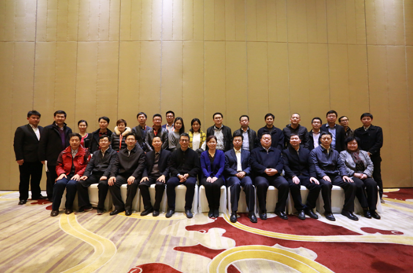

2015年第9次——文化宣传工作委员会第三次会议纪要
桂电志愿者网 日期：2015-12-11 来源：

为统筹做好重庆志交会期间媒体集中宣传工作，全面提升赛会的知名度和影响力，11月23日下午，中国青年志愿者协会在团中央机关会议室召开文化宣传工作委员会第三次工作研讨会，专题研究第二届中国青年志愿服务项目大赛暨重庆志交会赛会和2016年志愿服务重点项目宣传工作。团中央青年志愿者工作部部长杨松、中国青年志愿者协会文化宣传工作委员会副主任委员陆小华、隋明梅以及在京委员代表20余人参加了会议。
研讨会上，杨松首先回顾了一年来中国青年志愿者协会开展的重点工作，并对各位委员在去年“志交会”“暖冬行动”等志愿服务项目宣传工作中的大力支持表示感谢。杨松重点介绍了2015年第二届中国青年志愿服务项目大赛暨重庆志交会的筹备情况，他指出今年的赛会除继续深化志愿服务项目对接、资源配置功能以外，更加注重服务项目与公益资源的互动共享，更加突出志愿者的主体地位，更加增强志愿服务理念与文化交流。比如将在赛会期间发布 “志愿中国•2016”十大项目、举办“展望十三五•志愿新常态”高峰论坛、举办“倾听青年之声•讲述志愿故事”分享会、开展志愿服务文化产品展示等活动。今年还特别设置了公益创业专项赛，推进中国青年志愿服务事业从“活动”向“事业”转变。希望各位委员发挥专业优势，为赛会宣传工作建言献策，借助媒体力量，传播志愿服务文化，弘扬志愿者精神。
与会委员围绕会议主题积极发言，新华社音视频部主任陆小华指出新时期志愿文化交流要充分利用互联网平台，媒体宣传要创新角度发掘项目背后的故事，新华社会时刻关注，集中报道。经济日报社社会文化部主任隋明梅委员分享了自己的志愿服务心得，表示应该充分宣传典型志愿服务项目，发挥示范带动作用，让更多的人了解和支持志愿服务项目。人民出版社团委书记徐庆群建议对赛会的宣传工作进行科学规划，加大对其中感人的志愿服务故事的深度挖掘和集中宣传。中国青年杂志社编辑部主任李纯建议在传播、推广志愿文化时引入更多的时尚、流行元素，比如邀请明星担任志交会形象大使，利用明星的影响力扩大志交会的影响力。中国青年网记者李延兵委员建议对共青团常规性志愿服务品牌如“西部计划”“七彩小屋”进行集中性回顾报道，突出项目的持续性成效，对公益创业大赛的推广可以引入网络众筹平台和专家答疑环节，持续扩大公益创业在“大众创业、万众创新”时期的影响力。北京龙江波影视文化有限公司总监袁安洲建议加大志愿服务项目在媒体上的宣传力度，转变传统的宣传思路，采用丰富的音视频形式代替单一的图文形式。与会委员们纷纷表态，要发挥其所属媒体作用，多措并举、群策群力，共同做好志交会文化宣传工作。会后，分别向各位委员送发了赛会活动安排和相关材料。
【责任编辑：刘亚楠】